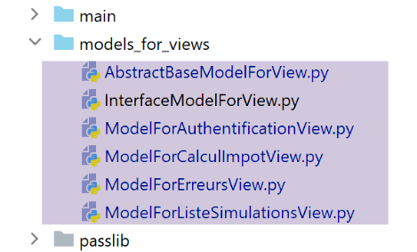
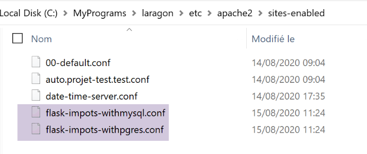

38. Esercizio pratico: versione 18
38.1. Implementazione

La cartella [impots/http-servers/13] viene inizialmente ottenuta copiando la cartella [impots/http-servers/12] e successivamente modificata parzialmente.
Iniziamo aggiungendo un nuovo parametro nel file [configs/parameters]:
…
# token CSRF
"with_csrftoken": False,
# database gestiti MySQL (mysql), PostgreSQL (pgres)
"databases": ["mysql", "pgres"],
# prefisso dell'applicazione URL
# impostare la stringa vuota se non si desidera alcun prefisso, altrimenti /prefisso
"prefix_url": "/do",
# URL radice del server Apache - impostare la stringa vuota per l'esecuzione al di fuori di Apache
"application_root": "/impots"
…
Alla riga 10, il parametro [application_root] rappresenterà l’alias WSGI del server virtuale Apache.
Con questo parametro, possiamo correggere l’istruzione di [responses/HtmlResponse] che aveva causato l’errore:

…
# ora è necessario generare il URL di reindirizzamento senza dimenticare il token CSRF se richiesto
if config['parameters']['with_csrftoken']:
csrf_token = f"/{generate_csrf()}"
else:
csrf_token = ""
# risposta di reindirizzamento
return redirect(f"{config['parameters']['application_root']}{config['parameters']['prefix_url']}{ads['to']}{csrf_token}")
, status.HTTP_302_FOUND
- riga 9: abbiamo aggiunto la radice dell’applicazione all’inizio dell’URL destinazione del reindirizzamento;
Dobbiamo inoltre correggere tutti i frammenti in modo che i URL in essi contenuti inizino dalla radice dell’applicazione (o dall’alias WSGI):

Il frammento [v-authentification]
<!-- modulo HTML - si inviano i valori con l'azione [authentifier-utilisateur] -->
<form method="post" action="{{modèle.application_root}}{{modèle.prefix_url}}/authentifier-utilisateur{{modèle.csrf_token}}"
>
<!-- titolo -->
<div class="alert alert-primary" role="alert">
<h4>Veuillez vous authentifier</h4>
</div>
…
</form>
Il frammento [v-calcul-impot]
<!-- modulo HTML inviato -->
<form method="post" action="{{modèle.application_root}}{{modèle.prefix_url}}/calculer-impot{{modèle.csrf_token}}">
<!-- messaggio su 12 colonne su sfondo blu -->
…
</form>
Il frammento [v-liste-simulations]
…
{% if modèle.simulations is defined and modèle.simulations|length!=0 %}
…
<!-- tabella delle simulazioni -->
<table class="table table-sm table-hover table-striped">
…
<tr>
<th scope="row">{{simulation.id}}</th>
<td>{{simulation.marié}}</td>
<td>{{simulation.enfants}}</td>
<td>{{simulation.salaire}}</td>
<td>{{simulation.impôt}}</td>
<td>{{simulation.surcôte}}</td>
<td>{{simulation.décôte}}</td>
<td>{{simulation.réduction}}</td>
<td>{{simulation.taux}}</td>
<td><a href="{{modèle.application_root}}{{modèle.prefix_url}}/supprimer-simulation/{{simulation.id}}{{modèle.csrf_token}}">Supprimer</a></td>
</tr>
{% endfor %}
</tr>
</tbody>
</table>
{% endif %}
Il frammento [v-menu]
<!-- menu Bootstrap -->
<nav class="nav flex-column">
<!-- visualizzazione di un elenco di link HTML -->
{% for optionMenu in modèle.optionsMenu %}
<a class="nav-link" href="{{modèle.application_root}}{{modèle.prefix_url}}{{optionMenu.url}}{{modèle.csrf_token}}">{{optionMenu.text}}</a>
{% endfor %}
</nav>
Tutti i frammenti sopra riportati utilizzano il modello [modèle.application_root]. Al momento la chiave [application_root] non esiste nei modelli generati dalle classi di modelli.

La classe [AbstractBaseModelForView], che è la classe padre di tutte le classi che generano un modello, diventa la seguente:
from abc import abstractmethod
from flask import Request
from flask_wtf.csrf import generate_csrf
from werkzeug.local import LocalProxy
from InterfaceModelForView import InterfaceModelForView
class AbstractBaseModelForView(InterfaceModelForView):
@abstractmethod
def get_model_for_view(self, request: Request, session: LocalProxy, config: dict, résultat: dict) -> dict:
pass
def update_model(self, modèle: dict, config: dict):
# calcolo del token CSRF
if config['parameters']['with_csrftoken']:
csrf_token = f"/{generate_csrf()}"
else:
csrf_token = ""
# aggiornamento del modello passato come parametro
modèle.update({
# token CSRF
'csrf_token': csrf_token,
# prefix_url
'prefix_url': configQZXW2HTMLBWyJwYXJhbWV0ZXJzIl0ZQXQZXW2HTMLBWyJwcmVmaXhfdXJsIl0ZQX,
# application_root
'application_root': configQZXW2HTMLBWyJwYXJhbWV0ZXJzIl0ZQXQZXW2HTMLBWyJhcHBsaWNhdGlvbl9yb290Il0ZQX,
})
- riga 15: il metodo [update_model] ha il compito di inserire nel modello le viste:
- riga 24: il token CSRF;
- riga 26: il prefisso di URL;
- riga 28: la radice dell’applicazione o alias WSGI;
Le quattro classi figlie richiamano la classe padre con il seguente codice:
…
# azioni disponibili dalla vista
modèle['actions_possibles'] = ["afficher-vue-authentification", "authentifier-utilisateur"]
# completamento del modello da parte della classe padre
super().update_model(modèle, config)
# si restituisce il modello
return modèle
- riga 6: ogni classe figlia chiama la propria classe padre per aggiornare il modello che ha creato;
La versione 18 è pronta. Riprendiamo i due server virtuali Apache della versione 17 e li modifichiamo:

I due file [flask-impots-withXX.conf] vengono modificati solo in un punto:
# cartella dello script .wsgi
define ROOT "C:/Data/st-2020/dev/python/cours-2020/python3-flask-2020/impots/http-servers/13/apache"
# nome del sito web configurato da questo file
# qui si chiamerà flask-impots-withmysql
# i URL saranno del tipo http(s)://flask-impots-withmysql/percorso
define SITE "flask-impots-withmysql"
# inserire l'indirizzo IP 127.0.0.1 per il sito SITE nel file c:/windows/system32/drivers/etc/hosts
# inserire qui i percorsi delle librerie Python da utilizzare - separarle con virgole
# qui le librerie di un ambiente Python virtuale
WSGIPythonPath "C:/Data/st-2020/dev/python/cours-2020/python3-flask-2020/venv/lib/site-packages"
# Python Home - necessario solo se sono installate più versioni di Python
# WSGIPythonHome "C:/Program Files/Python38"
# URL HTTP
<VirtualHost *:80>
# con l'alias / i URL avranno la forma /{prefixe_url}/action/...
# con l'alias /impots, i URL avranno la forma /impots/{prefixe_url}/action/...
# dove [prefixe_url] è definito in parameters.py
WSGIScriptAlias /impots "${ROOT}/main_withmysql.wsgi"
…
</VirtualHost>
# URL protette con HTTPS
<VirtualHost *:443>
# con l'alias /, i URL avranno la forma /{prefixe_url}/action/...
# con l'alias /impots, i URL avranno la forma /impots/{prefixe_url}/action/...
# dove [prefixe_url] è definito in parameters.py
WSGIScriptAlias /impots "${ROOT}/main_withmysql.wsgi"
..
</VirtualHost>
- alla riga 12, ora si utilizza la cartella [impots/http-servers/13/apache].
Siamo pronti per i test della versione 18 su Apache. La configurazione è la seguente:
- l’alias WSGI è /impots in entrambi i file di configurazione dei server virtuali;
- nel file di configurazione [configs/parameters], i parametri sono i seguenti:
# token CSRF
"with_csrftoken": False,
# prefisso dell'applicazione URL
# impostare la stringa vuota se non si desidera alcun prefisso, altrimenti /prefisso
"prefix_url": "/do",
# URL radice del server Apache - impostare la stringa vuota per l'esecuzione al di fuori di Apache
"application_root": "/impots"
Si avviano il server Apache e i due SGBD. Si richiede l’accesso a URL e [https://flask-impots-withmysql/impots/do]. La risposta del server è la seguente:

Si ottiene correttamente la pagina di autenticazione che non era stato possibile visualizzare nella versione precedente. Il resto dell’applicazione funziona normalmente.
Ora si testa l’altro server virtuale. Si richiedono i codici URL e [https://flask-impots-withpgres/impots/do]. La risposta del server è la seguente:

I concetti di alias WSGI e prefisso URL svolgono la stessa funzione. Uno di questi due concetti è ridondante. Pertanto, per anteporre la stringa [/impots/do] ai URL del server Apache, è possibile procedere in tre modi:
1 – [WGSIAlias /impots] e [prefix_url=’/do’];
2 - [WGSIAlias /] e [prefix_url=’/impots/do’];
3 - [WGSIAlias /impots/do] e [prefix_url=’’];
38.2. Test da console
Si utilizzano nuovamente i test da console del client [http-clients/09]:

- il URL del server deve essere modificato nelle configurazioni [1] e [3];
- è necessario apportare una modifica al livello [dao] affinché supporti il protocollo HTTPS del server Apache;
Nei file [config], il valore URL del server diventa il seguente:
"server": {
# "urlServer": "http://127.0.0.1:5000",
# "urlServer": "http://127.0.0.1:5000/do",
"urlServer": "https://flask-impots-withmysql/impots/do",
"user": {
"login": "admin",
"password": "admin"
},
"url_services": {
…
}
},
# modalità debug
"debug": True,
# csrf_token
"with_csrftoken": False,
- riga 4: il nuovo URL del server. Per la prima volta in questo documento, il client utilizza il protocollo HTTPS;
La classe [ImpôtsDaoWihHttpSession] del livello [dao] si evolve come segue:
…
# fase richiesta/risposta
def get_response(self, method: str, url_service: str, data_value: dict = None, json_value=None):
# [method]: metodo HTTP GET o POST
# [url_service]: URL di servizio
# [data]: parametri di POST in formato x-www-form-urlencoded
# [json]: parametri di POST in formato JSON
# [cookies]: cookie da includere nella richiesta
# è necessario disporre di una sessione XML o JSON, altrimenti non sarà possibile gestire la risposta
if self.__session_type not in ['json', 'xml']:
raise ImpôtsError(73, "il n'y a pas de session valide en cours")
# si aggiunge il token CSRF a URL di servizio
if self.__csrf_token:
url_service = f"{url_service}/{self.__csrf_token}"
# esecuzione della richiesta
response = requests.request(method,
url_service,
data=data_value,
json=json_value,
cookies=self.__cookies,
allow_redirects=True,
# per il protocollo https
verify=False)
# modalità debug?
if self.__debug:
# utente
if not self.__logger:
self.__logger = self.__config['logger']
# si effettua l'accesso
self.__logger.write(f"{response.text}\n")
…
# si restituisce il risultato
return résultat['réponse']
- alla riga 26, si aggiunge il parametro [verify=False] a causa del protocollo HTTPS utilizzato dal server Apache. Il modulo [requests] (riga 19) è in grado di gestire in modo nativo il protocollo HTTPS. Per impostazione predefinita, verifica la validità del certificato di sicurezza inviato dal server HTTPS e genera un'eccezione se il certificato ricevuto non è valido. È proprio questo il caso in cui il server Apache di Laragon invia un certificato autofirmato. Per evitare l’eccezione, si utilizza il parametro [verify=False] per indicare al modulo [requests] di non generare un’eccezione. [requests] si limita quindi a visualizzare un avviso (warning) sulla console.
Una volta apportate queste modifiche, tutti i test da console dovrebbero funzionare correttamente.